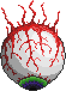
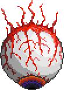

The Twins
| The Twins | |
|---|---|
| File:The Twins.png | |
| Statistics | |
| Type | Boss |
| Drops | |
|---|---|
| Coins: | 10 |
| Item | Rate |
| 20-30 | 100% |
| 5-15 | 100% |
- For strategies on how to defeat The Twins, see Guide:The Twins Strategies.
The Twins are a Hardmode version of the Eye of Cthulhu boss. They can be summoned at night with the Mechanical Eye or just at a Blood Moon.
Both eyes have their own individual life meter and the ability to teleport around. The eye with the red iris, Retinazer, fires purple eye lasers while hovering above and to one side of the player. The one with the green iris, Spazmatism, shoots a flamethrower like stream that appears to be formed of Cursed Flames. It keeps a set distance on one side of the screen, level to the player. Both alternate between their signature attacks and a charging attack, much like EoC. Note that Retinazer's charge dash is faster and covers a bit more distance than Spazmatism's charge dash.
Just like the Eye of Cthulhu, when they have been hit for half of their health, they change. Retinazer becomes a mechanical eye with a laser turret in its pupil, while Spazmatism becomes a mechanical mouth. After changing, Retinazer will start firing lasers more aggressively, and his lasers will be red death lasers that do more damage. It alternates between chasing the player with periodic fire and slowing down for rapid-fire. Spazmatism will begin chasing the players faster and constantly spewing Cursed Flames from its mouth. The Cursed Flames can inflict the Cursed Inferno debuff upon players. It alternates its flamethrowing attack with a much more aggressive charge dash that is both faster and covers quite a distance.
| Spazmatism (Second Form) | |
|---|---|
| File:Spazmatism (Second Form).png | |
| Statistics | |
| AI Type | Spazmatism AI |
| Damage | 30 eye fire 75 melee |
| Max Life | 12000/24000 |
| Defense | 35 |
| Retinazer (Second Form) | |
|---|---|
| File:Retinazer (Second Form).png | |
| Statistics | |
| AI Type | Retinazer AI |
| Damage | 25 death laser 20 death laser (rapid fire) 75 melee |
| Max Life | 12000/24000 |
| Defense | 25 |
| Spazmatism (First Form) | |
|---|---|
|  | |
| Statistics | |
| AI Type | Spazmatism AI |
| Damage | 25 cursed flame 50 melee |
| Max Life | 24000 |
| Defense | 10 |
| Retinazer (First Form) | |
|---|---|
|  | |
| Statistics | |
| AI Type | Retinazer AI |
| Damage | 20 eye laser 50 melee |
| Max Life | 24000 |
| Defense | 10 |
Trivia
- Retinazer's name is a portmanteau of retina, a part of the eye, and laser. Spazmatism's name is a portmanteau of astigmatism, an eye disorder, and spasm, meaning to twitch uncontrollably.
- The twins will disappear if the player(s) are too far away.
- Unlike the Eye of Cthulhu, the twins gain defense when they take on their second form (this requires further study)
- If the eyes are far enough of each other, the rope connecting them won't be visible until they get close enough again.
History
- 1.1: Introduced.
| Bosses |
|---|
| King Slime Eye of Cthulhu Eater of Worlds Skeletron Wall of Flesh The Twins The Destroyer Skeletron Prime |